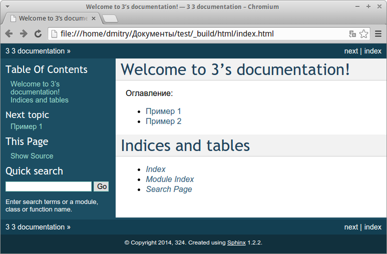

Генератор документации Sphinx
В главе рассмотрена установка и дополнительные настройки Sphinx, позволяющие задать или изменить параметры генерации документации.
Sphinx доступен для всех основных операционных систем, которые поддерживает язык программирования Python.
С помощью pip:
pip install sphinx
С помощью easy_install:
easy_install sphinx
В стандартном репозитории Ubuntu 14.10 есть пакеты python-sphinx и python3-sphinx.
sudo apt-get install python3-sphinx
Другие способы установки описаны в разделе Installing Sphinx официальной документации Sphinx.
Создадим директорию для нового проекта и перейдем в неё. Для этого в ОС Linux необходимо выполнить следующие команды в терминале:
mkdir MyProject
cd MyProject/
Для инициализации проекта необходимо выполнить команду sphinx-quickstart :
sphinx-quickstart
Программа задаст ряд вопросов. Все настройки можно будет позже изменить в файле conf.py.
> Корневой каталог документации. По умолчанию текущий каталог.
> Root path for the documentation [.]:
> Сделать ли раздельные папки исходников и готовых страниц - Да
> Separate source and build directories (y/N) [n]: y
> Префикс для директорий с шаблонами и статическими файлами.
> Name prefix for templates and static dir [_]:
> Название проекта. Для начала лучше вводить на латинице.
> Project name:
> Имя автора/авторов. Для начала лучше вводить на латинице.
> Author name(s):
> Версия проекта
> Project version:
> Номер релиза проекта
> Project release [1]:
> Расширение исходного файла. По умолчанию .rst.
> Source file suffix [.rst]:
> Имя мастер-документа. По умолчанию index.rst.
> Name of your master document (without suffix) [index]:
> Генерировать ePub версию документации?
> Do you want to use the epub builder (y/n) [n]:
> Автоматически вставлять docstrings из модулей
> autodoc: automatically insert docstrings from modules (y/n) [n]:
>
> doctest: automatically test code snippets in doctest blocks (y/n) [n]:
>
> intersphinx: link between Sphinx documentation of different projects (y/n) [n]:
>
> todo: write "todo" entries that can be shown or hidden on build (y/n) [n]:
>
> coverage: checks for documentation coverage (y/n) [n]:
> Использовать модуль pngmath для вставки формул в формате png
> pngmath: include math, rendered as PNG images (y/n) [n]:
> Использовать модуль mathjax для вставки формул в формате MathJax
> mathjax: include math, rendered in the browser by MathJax (y/n) [n]: y
>
> ifconfig: conditional inclusion of content based on config values (y/n) [n]:
>
> viewcode: include links to the source code of documented Python objects (y/n) [n]:
> Создать Makefile - да
> Create Makefile? (y/n) [y]:
> Сделать ли файл .bat, - нет, если у вас Linux
> Create Windows command file? (Y/n) [y]: n ()
После ответа на вопросы будут созданы файлы index.rst, conf.py, Makefile, _build, _static, _templates.
.
├── Makefile
├── _build
├── _templates
├── _static
├── conf.py
└── index.rst
Makefile — содержит инструкции для генерации результирующего документа командой make.
_build — директория, в которую будут помещены файлы в определенном формате после того, как будет запущен процесс их генерации.
_static — в эту директорию помещаются все файлы, не являющиеся исходным кодом (например, изображения). Позже создаются связи этих файлов с директорией build.
conf.py — содержит конфигурационные параметры Sphinx, включая те, которые были выбраны при запуске sphinx-quickstart в окне терминала.
index.rst — это корень проекта. Он соединяет документацию воедино, если она разделена на несколько файлов [1] .
|
IBM developerWorks Россия: Простое и удобное создание документации в Sphinx |
В каталоге проекта находится файл index.rst, который служит для объединения всех файлов в один проект. index.rst имеет достаточно простую структуру. Если открыть index.rst в простом текстовом редакторе, то будет отображено примерно следующее содержание:
.. 3 documentation master file, created by
sphinx-quickstart on Fri Dec 26 19:44:30 2014.
You can adapt this file completely to your liking, but it should at least
contain the root `toctree` directive.
Welcome to 3's documentation!
=============================
Contents:
.. toctree::
:maxdepth: 2
Indices and tables
==================
* :ref:`genindex`
* :ref:`modindex`
* :ref:`search`
Первый абзац, который начинается с двух точек, содержит комментарий. Две идущие подряд точки .. перед абзацем означают комментарий. Также они служат объявлением многих команд.
Подробнее синтаксис разметки рассматривается в следующих главах, а пока рассмотрим директиву .. toctree::. Данная директива объединяет отдельные файлы в единый проект.
Содержимое index.rst не должно включать много информации и в нём обязательно должна присутствовать директива .. toctree::.
Чтобы включить в проект другие файлы, необходимо прописать названия этих файлов в .. toctree::. Для примера создадим в корне проекта файл example1.rst и example2.rst со следующим содержанием:
Это пример
==========
Теперь включим их в проект в файле index.rst, добавив названия файлов к директиве .. toctree::.
Оглавление:
.. toctree::
:maxdepth: 2
example1
example2
Обратите внимание, что название файла пишется без расширения. Также важен отступ и пустая строка. Подробнее директива .. toctree:: рассматривается в разделе Автоматическое содержание главы Конструкции разметки Sphinx.
Сохраним index.rst и произведем генерацию документа в формат HTML.
Для генерации документации в HTML формат необходимо выполнить в командной строке команду make html. Аналогичным образом можно выполнить генерацию в другие форматы, например, make epub.
cd MyProject/
make html
Произойдет сборка HTML, выходные файлы будут помещены в директорию _build/html/. Перейдем в неё и откроем файл index.html в браузере.

Получив совсем немного исходных данных, Sphinx сумел создать нечто большее. Мы получили несложную компоновку, содержащую информацию о документации проекта, раздел поиска, содержание, заметки об авторских правах, включая имя и дату, а также нумерацию страниц.
Обратите внимание на раздел поиска: Sphinx проиндексировал все файлы и с помощью JavaScript создал статический сайт, на котором можно искать нужную информацию.
На снимке показана стандартная тема оформления документации. Она может быть изменена. Также можно настроить локализацию и прочие параметры.
Файл конфигурации conf.py позволяет настроить много дополнительных параметров генерации документации.
Для добавления изображений в документы, необходимо предварительно поместить изображения в папку _static. В файл изображения добавляются директивой .. image:: или .. figure:::
.. image:: _static/favicon.png
Подробнее смотрите раздел Изображения и иллюстрации.
Для автоматической сборки документации используйте sphinx-autobuild.
Для установки выполните команду:
pip install https://github.com/lepture/python-livereload/archive/master.zip
Или:
pip install sphinx-autobuild
Для запуска автоматической сборки выполните команду:
sphinx-autobuild <папка-с-проектом-Sphinx> <папка-с-проектом-Sphinx>/_build/html
В первом параметре указывается директория с исходными rst-файлами, во втором указывается папка с выходными данными.
В моем случае команда выглядела следующим образом:
sphinx-autobuild docs docs/_build/html
Посмотреть сгенерированную документацию можно открыв в браузере адрес http://127.0.0.1:8000.
Для интеграции в Makefile добавьте цель:
livehtml:
sphinx-autobuild -b html $(ALLSPHINXOPTS) $(BUILDDIR)/html
Подробнее смотрите официальную документацию sphinx-autobuild.
Все настройки сборки документации находятся в файле conf.py в корне проекта Sphinx.
Общие настройки задаются в разделе General configuration файла conf.py.
Изменение названия и копирайта
# General information about the project.
project = 'Sphinx-ru'
copyright = '2014, Dmitry Mazhartsev'
Использование кириллических символов в названиях проекта и других строках, может приводить к ошибкам генерации. В версии Sphinx для Python 3 таких проблем не наблюдается. В версии для Python 2.7 перед каждой кириллической строкой необходимо ставить u.
project = u'Мой проект'
copyright = u'2014, Дмитрий Мажарцев'
Изменить параметры version и release:
# The short X.Y version.
version = '1'
# The full version, including alpha/beta/rc tags.
release = '1'
Многие шаблоны тем имеют несколько локализаций, в зависимости от этого некоторые элементы оформления могут быть автоматически локализованы, например, заголовки блоков предупреждений меняются в зависимости от языка.
Настройки языка задаются в разделе General configuration файла conf.py в строке language:
language = 'ru'
Для корректной генерации ePub в разделе Options for Epub output файла conf.py есть строка epub_language :
epub_language = 'ru'
Формат отображения даты зависит от выбранного языка (см. Настройка локализации). Но можно задать и собственный формат.
today = ''
today_fmt = '%B %d, %Y'
Из этих настроек берется информация для автозамены |today| (см. Автозамены Sphinx (Подстановки)).
Список расширений для Sphinx приведен на странице Sphinx Extensions официальной документации.
Подключаемые расширения прописываются в файле conf.py, в строке extensions.
extensions = [
'sphinx.ext.mathjax',
'sphinx.ext.graphviz',
]
Формулы в Sphinx могут отображаться с помощью одного из двух расширений: sphinx.ext.pngmath или sphinx.ext.mathjax. Первое расширение отображает формулы как изображения в png формате. Другое расширение использует JavaScript библиотеку mathjaxдля отображения формул.
Я предпочитаю использовать sphinx.ext.mathjax, так как оно позволяет масштабировать формулы без потери качества отображения. Но для сервиса Read The Docs нужно использовать sphinx.ext.pngmath.
Указать Sphinx какое расширение использовать можно в конфигурационном файле conf.py, в строке extensions.
extensions = [
'sphinx.ext.mathjax',
]
или
extensions = [
'sphinx.ext.pngmath',
]
Warning
Использовать одновременно оба расширения нельзя.
Настройки генерации в формат HTML задаются в разделе Options for HTML output файла conf.py.
В разделе Options for HTML output раскомментировать строку и прописать путь к файлу favicon:
html_favicon = '_static/favicon.ico'
Имеется возможность добавлять метаданные каждой из страниц. Это не относится к настройкам файла conf.py, а добавляется непосредственно в rst файлы с помощью директивы .. meta::. Подробнее смотрите раздел Метаданные. Тег META.
В строке html_theme указать название используемой темы:
html_theme = 'sphinx_rtd_theme'
Раскомментировать строку html_theme_path и прописать в ней путь к HTML-теме:
html_theme_path = ['.']
В Sphinx есть ряд встроенных тем. Для их подключения достаточно написать название темы в строке html_theme, путь указывать не надо. Названия стандартных тем:
Некоторые из перечисленных тем поддерживают дополнительные настройки. Подробнее смотрите раздел HTML theming support официальной документации Sphinx.
Note
В Read The Docs при значении html_theme = 'default' используется тема Read The Docs.
Некоторые сторонние темы:
Настройки генерации в формат LaTeX задаются в разделе Options for LaTeX output файла conf.py.
В файле conf.py можно указать дополнительные параметры преамбулы:
# Additional stuff for the LaTeX preamble.
'preamble': '\\usepackage[utf8]{inputenc}',
'babel': '\\usepackage[russian]{babel}',
'cmappkg': '\\usepackage{cmap}',
'fontenc': '\usepackage[T1,T2A]{fontenc}',
'utf8extra':'\\DeclareUnicodeCharacter{00A0}{\\nobreakspace}',
}
Для корректной генерации в формат LaTeX кириллических документов необходимо указать в файле conf.py дополнительные параметры преамбулы, смотрите пример в разделе Преамбула.
Уровни заголовков в содержании
Параметр :maxdepth: не распространяется на LaTeX-документы. Глубина оглавления в LaTeX контролируется его внутренним счетчиком, который можно настроить в файле конфигурации Sphinx conf.py, указав в преамбуле значение \setcounter{tocdepth}{2}.
Для генерации в формат ePub используются настройки conf.py в разделе Options for Epub output. Также частично используются настройки из раздела генерации в HTML Options for HTML output.
Для корректной генерации ePub в разделе Options for Epub output файла conf.py есть строка epub_language :
epub_language = 'ru
В разделе Options for HTML output раскомментировать и установить значение False строке html_show_copyright
# If true, "(C) Copyright ..." is shown in the HTML footer.
# Default is True.
html_show_copyright = False
Отключение надписи “Created using Sphinx”
В разделе Options for HTML output раскомментировать и установить значение False строке html_show_sphinx
# If true, "Created using Sphinx" is shown in the HTML footer.
# Default is True.
html_show_sphinx = False
Настройка отображения URL-адресов
URL-адреса могут отображаться в ePub в нескольких режимах: в строке(inline), внизу страницы(footnote) и быть оформлены в виде гиперссылок(no). Для настройки отображения необходимо раскомментировать строку epub_show_urls и установить нужное значение:
# How to display URL addresses: 'footnote', 'no', or 'inline'.
epub_show_urls = 'inline'
Раскомментировать и установить нужное значение. По умолчанию в оглавление входят заголовки глубиной до 3-х уровней:
# The depth of the table of contents in toc.ncx.
epub_tocdepth = 3
Настройка названия и заголовка
# Bibliographic Dublin Core info.
epub_title = 'Sphinx-ru'
epub_author = 'Dmitry Mazhartsev'
epub_publisher = 'Dmitry Mazhartsev'
epub_copyright = '2014, Dmitry Mazhartsev'
Для решения проблем с кириллическими строками смотрите раздел